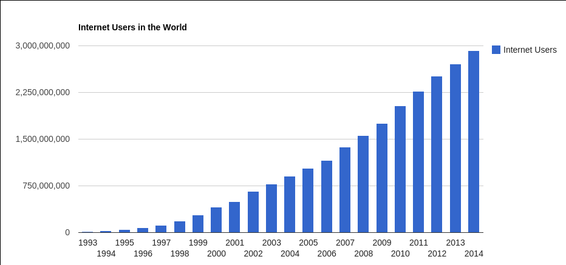
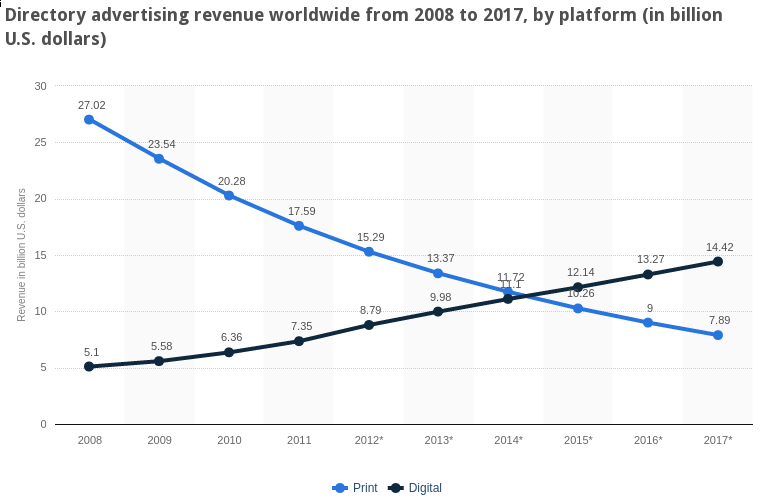

Mobile
Table of Contents
- 1. Mobile
- 2. Internet Users
- 3. Mobile subscriptions
- 4. Internet changing lives
- 5. Mobile Catalyst
- 6. $$
- 7. Not just new users
- 8. Mobile Yelp:slide:
- 9. How to Capitalize
- 10. Bold
- 11. Mobile Software Stack
- 12. "Native" Applications
- 13. Web Applications
- 14. Mobile Web is the same
- 15. Mobile Web is different
- 16. Closing the Gap
- 17. Mobile First
1 Mobile
2 Internet Users

- China, India, Indonesia, Turkey fastest growing countries
- Numbers growth driven by emerging markets
2.1 Notes notes
- http://www.internetlivestats.com/internet-users/
- 44 million in the first internet bubble
- 3 billion now
- where is that growth coming from?
3 Mobile subscriptions
- Similar story: emerging markets driving mobile adoption
3.1 Mobile subscripts per capita
- China near the bottom!
- So much potential growth in the areas that are already surpassing US in raw numbers
3.1.1 Crazy Part notes
- We're seeing overwhelming numbers, and it only tip of the iceburg
- 1B Smartphone users
- 5B "Feature" phone users
4 Internet changing lives
- Find businesses with Yelp
- Contact friends on Facebook
- Share pictures with Instagram
- Read with Kindle
- Watch with Netflix Streaming
- Pay with Square
- Inspiration with Pinterest
5 Mobile Catalyst
- Bridges divide between real life and digital
- Captures and delivers content to you
- Starting to capture context
5.1 Delivery notes
- Mobile can be where you are
- Often is where you are
- Delivered to you, not your house, not your work
5.2 Context
- Location
- Time (now)
- Movement
- Mode
5.2.1 Details notes
- Mobile can capture where you are
- Yelp users search for dinner at dinner time; desktop search for dinner any time
- Waze traffic aggregation
- Checking work email, calendar, tickets?
6 $$

- Advertising dollars still lagging
6.1 Lag notes
- $14 Billion in revenue, mostly from Yellowpages and Newspapers
- Where's that money going?
- Not just mobile ad, but Internet advertising in general
7 Not just new users

- Mobile internet soon outpacing desktop
- Happening faster in emerging markets for a variety of reasons
7.1 Reasons notes
- phones are cheaper, easier to keep on your person
- essential for communicating
8 Mobile Yelp:slide:

- ~50% of unique monthly visitors from mobile
- Even higher number of searches
8.1 Reasons notes
- location and timeliness
9 How to Capitalize
- "Shoot ahead of the duck"
- Be bold
- Experiment
9.1 Mobile notes
- Trend is obviously toward mobile, but not majority yet: shoot there
- Keep a fresh outlook, and go 100% toward what you believe
- Bigger companies need to "invest": be sure where a technology will end up before the do something about it.
- Small companies can try things out, ditch what doesn't work (risky!)
10 Bold center
10.1 Example notes
- 2:30 Privacy
- You may not agree with this statement, but you need to be doing stuff bigger companies are uncomfortable with
- Web Architecture helps you here: no one has to approve your idea (you can fail without a net or ceiling)
- Another example is iPod: evaluate what buttons you need, get rid of the rest, use technology to support your idea
11 Mobile Software Stack

11.1 Review notes
- OS sites on top of hardware
- Libraries are used by any higher level for common functionality
- Services similar to libraries, but they "run" on their own, can contact external services
- UI Widgets are things like buttons, drop downs
- Apps written to use libraries and services
- Browsers special apps that essentially can download and run other (web) apps
12 "Native" Applications two_col
- Written directly with libraries and services
- Platform specific language: Java, Objective-C
- Fewer constrains, but less compatibility
- Obtained through controlled marketplaces

12.1 Trade-offs notes
- Directly control UI, make use of phone's specific services
- OTOH, must directly control UI, make use of the specific services for each phone you want to support
- Marketplace for downloads
12.2 Native Features
- Rotation
- Compass
- Gyroscope
- Services (contacts)
13 Web Applications two_col
- Written for the browser
- Platform agnostic, no barriers to access
- Leverages existing technology stacks, but creates opaque dependencies
- Often slower
13.1 Most notes
- Still have to test across devices
- Constraints are changing, technology like "canvas" allows arbitrary drawings
- Performance trade-off: must rely on browser's ability to render efficiently, can't update it for your app.
14 Mobile Web is the same
- Web Browsers
- HTTP
- HTML
- Javascript
14.1 Still the web notes
- The mobile web is still the web
- Uses all the same technologies, in the same ways
- Mobile browser still a browser, with DOM, JS, etc.
15 Mobile Web is different
- Browsers developed in world of standards
- Context available
- Interfaces different
15.1 Differences notes
- Much less variance between CSS, javascript support
- Means you can push HTML5 to its limits
- Geolocation
- Screen size, multitouch, finger "presses"
16 Closing the Gap two_col
- Native apps in HTML5
- PhoneGap

16.1 Details notes
- Write HTML5, Javascript, framework will render it for you
- Use javascript to call platform specific abilities
17 Mobile First
- Philosophy: develop your product for mobile
- Take advantage of mobile features
- Contrast: desktop experience, pare down for mobile
17.1 Write the app for a phone notes
- If you're a new project/company, mobile is your edge
- So focus on your edge, build mobile first
- Alternative is to make your desktop app, then simplify it for mobile
17.2 Example

17.3 Notes notes
- Just because you can display the desktop version doesn't mean you should
- Even if you reflow the content, the usage case of mobile may be so
different you don't want to share HTML
17.4 Benefits
- Focus
- Simplicity
- Beauty
17.4.1 Details notes
- For a desktop app, easy to start copying other desktop apps:
- login screen
- cross promotion
- wizards
- Instead mobile forces you to focus on the most essential elements… and that's all that will fit on the screen!
- Makes you show how to use it: there's no hover effects for you mouse, just your fat fingers
- Many products are differentiated based on their user experience. Mobile has a tendency to draw that beauty out, or make it painfully obvious when it is not
17.5 Example

17.6 Notes notes
- Focus on searching now and near
- remove elements you're less likely to do, such as write a review or read
random reviews
17.7 Drawbacks
- Need some story around desktop
- New platform to learn
- Limits experience
17.8 Details notes
- Now you have to test all desktop browsers, too?
- Not many folks experienced with mobile development
- Are you editing photos? Writing code? Maybe you just can't do that on a small screen (though I'd still try designing for a tablet)
17.9 Advice
- Make it so easy to use, people start using it by accident

17.9.1 Pinterest notes
- Land on the home page, just start scrolling
- You're using the product! (discovering content)
- Next step is easy, click one button (repin)
- Twitter another good example